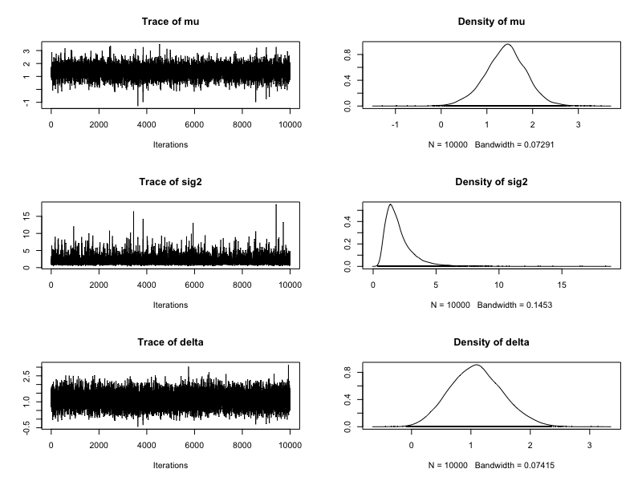
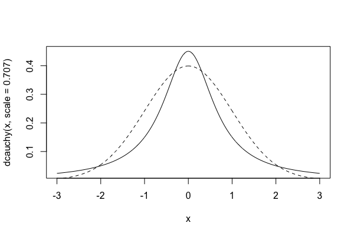
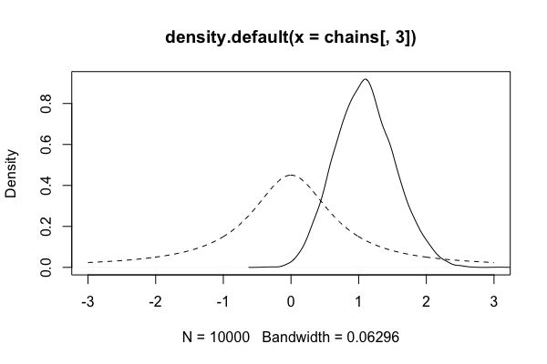
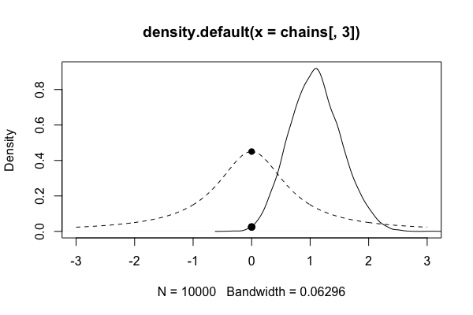

Week 14 lecture notes - PSYC 5316
In our final lecture of the semester, we will discuss Bayes factors, an alternative to traditional null hypothesis testing.
Definition
A natural consequence of Bayes Theorem provides a nice framework for testing hypotheses. Let \(H_0\) denote the null hypothesis model, and let \(H_1\) denote the alternative model. As a Bayesian, we are interested in knowing \(P(H_i\mid D)\), where \(D=\mathrm{data}\) and \(i=0,1\).
From Bayes Theorem, we get the following:
\[ P(H_1\mid D) = \frac{P(D\mid H_1) \cdot P(H_1)}{P(D)} \]
and
\[ P(H_0\mid D) = \frac{P(D\mid H_0) \cdot P(H_0)}{P(D)}. \]
Taking the ratio, we then can write:
\begin{align*} \frac{P(H_1\mid D)}{P(H_0\mid D)} &= \frac{\frac{P(D\mid H_1) \cdot P(H_1)}{P(D)}}{\frac{P(D\mid H_0) \cdot P(H_0)}{P(D)}}\\ &= \frac{P(D\mid H_1) \cdot P(H_1)}{P(D)} \cdot \frac{P(D)}{P(D\mid H_0)\cdot P(H_0)} \\ &= \frac{P(D\mid H_1) \cdot P(H_1)}{P(D\mid H_0)\cdot P(H_0)}\\ \end{align*}We can rewrite this slightly more informatively as:
\[ \underbrace{\frac{p(H_1 \mid D)}{p(H_0\mid D)}}_{\text{posterior odds}} = \underbrace{\frac{p(D\mid H_1)}{p(D\mid H_0)}}_{\text{Bayes factor}} \cdot \underbrace{\frac{p(H_1)}{p(H_0)}}_{\text{prior odds}} \]
The term in the middle, which Kass and Raftery (1995) called the Bayes Factor, tells us how much our observation of data updates the prior odds of \(H_1\) over \(H_0\). In other words, it tells us how informative our data is.
Jeffreys (1961) calls this evidence, and gives recommendations of how Bayes factors relate to evidence.
| BF | evidence |
|---|---|
| 1 | no evidence |
| 1-3 | anecdotal evidence |
| 3-10 | moderate evidence |
| 10-30 | strong evidence |
| 30-100 | very strong evidence |
Bayesian t-tests
Though Bayes factors have been around a while, they are pretty new to our field. The first substantive work on applying Bayes factors to our basic inferential tools was by Jeff Rouder and Richard Morey, whose first paper on Bayesian t-tests came out in 2009! Thankfully, Richard Morey has developed a very nice R package for computing Bayes factors in common designs (t-tests, ANOVAs, etc.). We will demonstrate this package and how to interpret Bayes factors tonight.
paired samples t-test
To begin our work, we need to load two packages:
library(BayesFactor) library(tidyverse)
Next, we will load a data set that is included in the BayesFactor package. This data set shows the effect of two soporific drugs on a sample of 10 patients. The variable extra represents the "extra sleep" that each patient got after taking the drug.
data(sleep)
Since each patient took two drugs (denoted by the variable ID), we might be interested in whether there is a difference in the amount of extra sleep gained between the two drugs. This calls for a paired samples t-test.
Remember that to perform a paired samples t-test, one first computes difference scores, and then tests these difference scores against a (null) hypothesized difference score of 0.
First, let's do some data wrangling to compute our difference scores:
drug1 = sleep %>% filter(group==1) drug2 = sleep %>% filter(group==2) change = drug2$extra = drug1$extra
Now change is a vector of 10 difference scores. We can easily compute mean and standard deviation of these 10 difference scores, and from this we can get an estimate of the effect size:
mean(change) sd(change) mean(change)/sd(change)
From this, we see that the mean difference score is 1.58, with a standard deviation of 1.23. Thus, the overall (standardized) effect size is 1.58/1.23 = 1.28, which we consider a large effect.
The traditional t-test proceeds as follows:
t.test(change, mu=0)
From the output, we see that we reject the null and conclude that there is a significant difference between the two drugs, \(t(9)=4.06\), \(p=0.003\).
For the Bayesian version of the t-test, we do the following:
bf = ttestBF(x=change) bf
The output looks like this:
Bayes factor analysis -------------- [1] Alt., r=0.707 : 17.25888 ±0% Against denominator: Null, mu = 0 --- Bayes factor type: BFoneSample, JZS
There is a lot here, but first let's focus on the primary output. The Bayes Factor is 17.3. This means that after seeing the data, the alternative model (i.e., \(H_1\)) is 17.3 times more likely than the null model (\(H_0\)). According to the recommendations of Jeffreys (1961), this is strong evidence in favor of the alternative.
One of the nice things about Bayes factors is that they are simple mathematical objects that you can do things with, like taking reciprocals.
1/bf
The output looks like this:
Bayes factor analysis -------------- [1] Null, mu=0 : 0.05794119 ±0% Against denominator: Alternative, r = 0.707106781186548, mu =/= 0 --- Bayes factor type: BFoneSample, JZS
This says that after seeing the data, the null is 0.06 times "more likely" than the alternative. In other words, it is MUCH LESS LIKELY than the alternative. However, this means that it is equally fine to measure evidence FOR the null as it is to measure evidence AGAINST the null. This is a major limitation in null hypothesis testing that a Bayesian framework overcomes quite easily.
Now, since the Bayes factor is inherently a Bayesian object, that means we can do all of the typical parameter estimation stuff we did earlier, like posterior sampling, etc.
chains = posterior(bf, iterations=10000) summary(chains)
The output looks like this:
Iterations = 1:10000
Thinning interval = 1
Number of chains = 1
Sample size per chain = 10000
1. Empirical mean and standard deviation for each variable,
plus standard error of the mean:
Mean SD Naive SE Time-series SE
mu 1.409 0.4557 0.004557 0.005158
sig2 2.043 1.2100 0.012100 0.015412
delta 1.094 0.4414 0.004414 0.005725
g 7.465 69.1904 0.691904 0.691904
2. Quantiles for each variable:
2.5% 25% 50% 75% 97.5%
mu 0.4751 1.1213 1.421 1.703 2.277
sig2 0.7370 1.2771 1.743 2.436 5.170
delta 0.2780 0.7868 1.084 1.387 1.997
g 0.1625 0.5464 1.234 3.157 32.005
Notice that we get an array of estimates for several quantities, including mu (population mean), sig2 (population variance), and delta (effect size). Since this is Bayesian technique, we also get estimates of error in each of these quantities. This is easily seen in the following plot:
plot(chains[,1:3])

On the left, we see the plot of 10000 posterior samples (notice they look like fat hairy caterpillars, which is a good thing!). On the right, we get density plots for the posterior samples. Notice particuarly that the plots for mu and delta peak close to our original estimates of the mean difference score (1.58 and 1.28, respectively).
What is r?
(Note: for this section, you need a command from the polspline package). If you do not already have it installed, execute install.packages("polspline") from the console.
You may be wondering what the r=0.707 in the output means? This has to do with the prior, which you may notice we didn't mention anything about. Well, this is a Bayesian computation, and there has to be a prior somewhere!
The prior we use is based on the recommendations of Rouder et al. (2009). The way Rouder defines the Bayesian t-test is that we compute an estimate for the effect size \(\delta\). The prior for the null model \(H_0\) is a Cauchy prior with scale \(r\). The Cauchy distribution is similar to the normal distribution, but it is more peaked around 0. That is, it places more prior probability on an effect size of 0 than the normal distribution. You can see that here:
x=seq(-3,3,0.01) plot(x, dcauchy(x, scale=0.707), type="l") lines(x, dnorm(x, mean=0, sd=1), lty=2)

As you can see in the code, we used scale=0.707 as an argument to plot the Cauchy density. We could change this however we want. However, Rouder et al. (2009) recommend using a scale of \(r=\sqrt{2}/2\), which is about \(r=0.707\). I certainly invite you to play around with the plot as you use various values of r.
Now lets have some fun. We know our prior on effect size, which is dcauchy(x, scale=0.707). We also have a posterior density for effect size, which we can plot as follows:
plot(density(chains[,3]), xlim=c(-3,3)) lines(x,dcauchy(x, scale=.707), lty=2)

Notice how prior to seeing data, we have a lot of mass on an effect size of 0. However, after seeing data (i.e., posterior), that mass is shifted away from 0. How much, you might ask? Look at the following:
library(polspline) fit.posterior = logspline(chains[,3]) posterior = dlogspline(0, fit.posterior) prior = dcauchy(0, scale=0.707) points(0, posterior, pch=19) points(0, prior, pch=19)

The ratio of the heights of these dots is exactly the Bayes factor! Intuitively, it represents how our belief in a particular effect size (namely \(\delta=0\)) changes after seeing the data. In this case, our belief in \(\delta=0\) decreases by a factor of approximately 18 (to see this, compute prior/posterior in the R console).
By the way, this computation is called the Savage-Dickey density ratio, and there is a nice article by E.J. Wagenmakers in the Journal of Cognitive Psychology that explains its use in psychology.